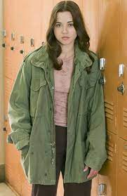
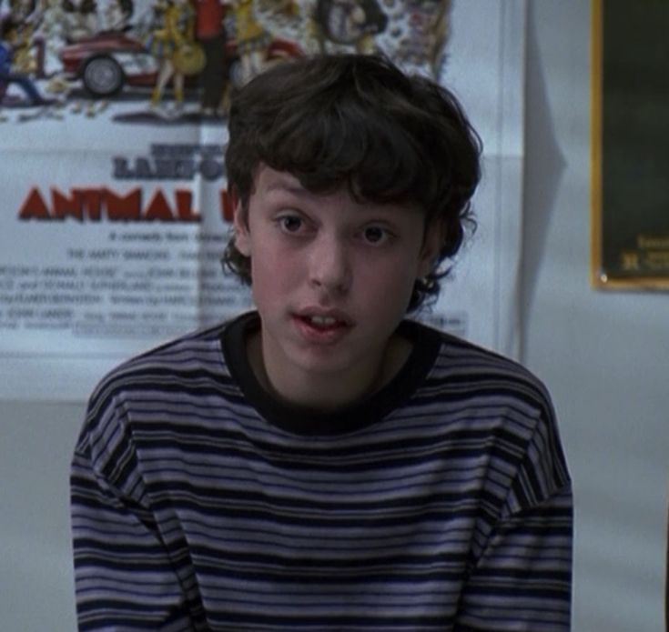
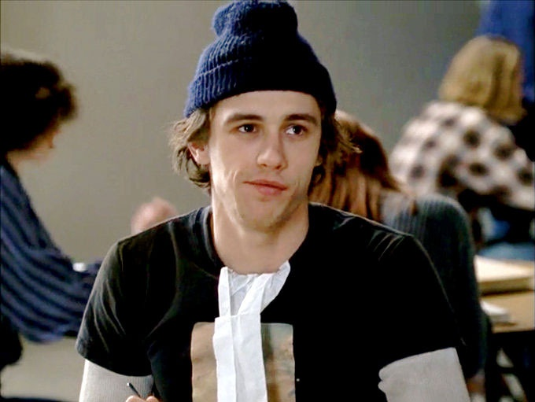
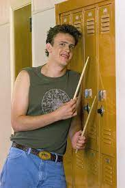
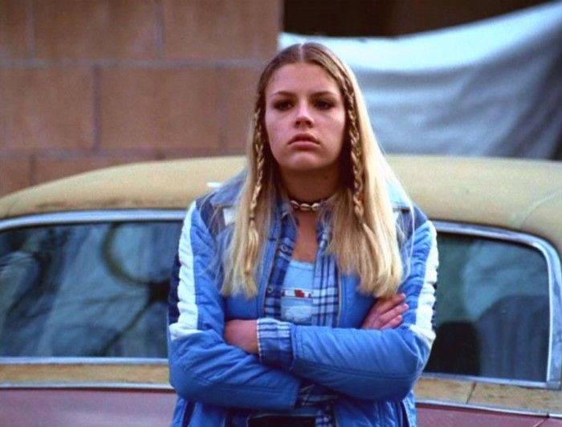
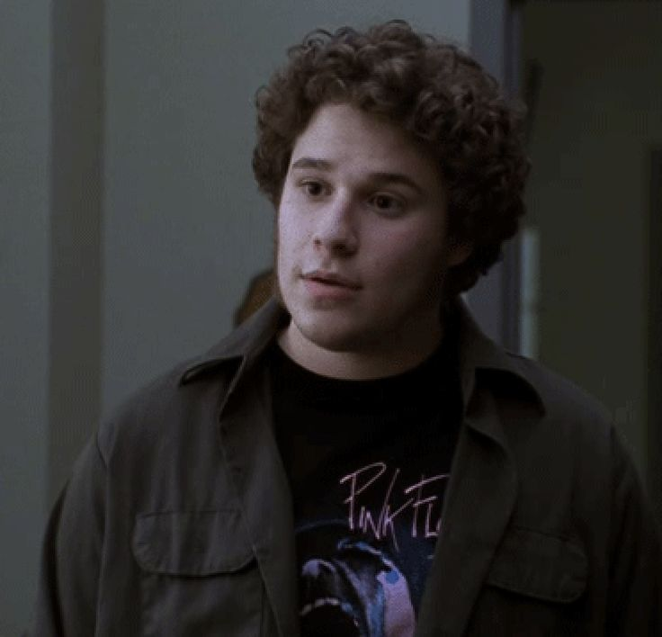
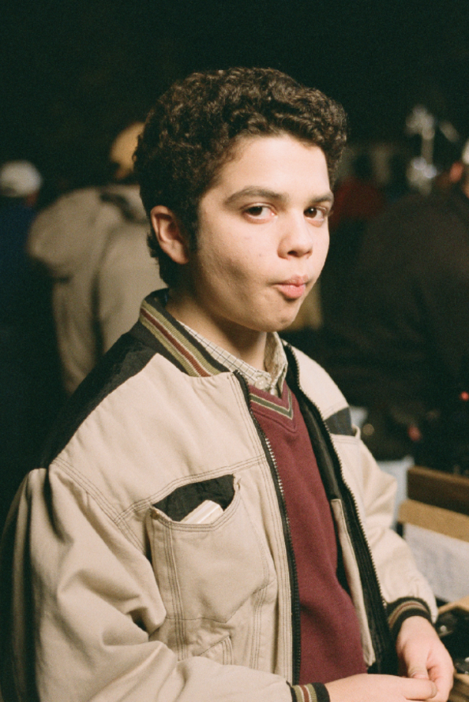
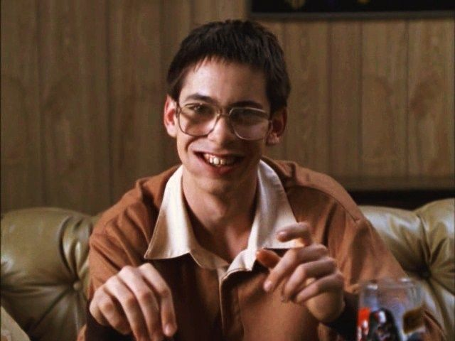

![Ícone representando uma pequena TV.]()
Lista de personagens de Freaks and Geeks
Lista de personagens da série de televisão Freaks and Geeks
protagonistas
Lindsay Weir — interpretada por Linda Cardellini — a filha mais velha da família Weir. Na infância, foi a melhor amiga de Millie Kentner. Cedo no colegial foi reconhecida como estudante inteligente e aplicada (bem como um destaque na equipe dos matletas). No entanto, com a morte de sua avó, ela começa a questionar seus valores, religião, os valores sociais e, pessoalmente, o que ela de fato deseja para sua vida então. Começa então a criar vínculos com um determinado grupo de colegiais, freqüentemente chamdos de os "freaks", adeptos e usuários de drogas, roupas batidas e música pop, o que preocupa tanto sua família quanto seus antigos amigos (particularmente Millie). Apesar de sua nova situação social, ela permanece como uma menina inteligente e generosa, constantemente questionando o mundo ao seu redor na esperança de encontrar um lugar onde possa ser aceita e se sentir bem.

Sam Weir — interpretado por John Francis Daley — é o irmão mais novo de Lindsay. Assim como a irmã, Sam tem um perfeito senso moral e boas maneiras, no entanto é tímido quando fora de seu círculo habitual de amigos. Partilha dos interesses de seus eternos companheiros Bill e Neal, incluindo séries humorísticas americanas, como Saturday Night Live, atores cômicos, tais como Bill Murray e Steve Martin, e ficção científica. Estando tão envolvidos com esse tipo de assunto, e sendo também de certa forma socialmente inadequados, Sam e seus amigos são freqüentemente chamados de os "geeks". Ainda que ele aprecie sempre a companhia de seus amigos, Sam batalha para que seja notado como mais do que mais um geek (especialmente enquanto tenta impressionar a lider de torcida, Cindy Sanders). Infelizmente, as constantes chacotas de estudantes como seu colega Alan White fazem com que Sam se sinta mais embaraçado do que exatamente confiante.

Daniel Desario — interpretado por James Franco — é um típico freak, particularmente carismático. Daniel é usualmente reconhecido no colégio por uma das duas: ou está brigando com sua namorada Kim Kelly ou matando aula. Ele é de certa forma um egoísta e manipulativo, mas faria sacrifícios para ajudar seus amigos. Daniel tenta esconder o fato de que tem na verdade dezoito anos, e então que repetiu dois anos na escola. Sua visão rebelde e anarquista dos dogmas sociais acabam freqüentemente por causar-lhe problemas, no entanto, enquanto ele continua por ignorar seus deveres, eventualmente tem a chance de provar seu algum potencial. Daniel tem um irmão mais velho e mora com seus pais, casados.

Nick Andopolis — interpretado por Jason Segel — é outro membro do grupo dos freaks. É amigável, delicado e gentil, partilhando do senso de humor cáustico que caracteriza outros de seus amigos. Nick é usuário de maconha; embora um bom jogador de basquete, Nick foi cortado de seu time por posse de drogas. Mais recentemente, uma significativa paixão de Nick é a música - mais especificamente, sua bateria de 29 peças. Apesar das objeções de seu pai, um militar rígido, Nick pratica freqüentemente, muitas vezes com isso negligenciando seus estudos. Apesar de seu empenho, ele não parece ter nunca melhorado como baterista. Nick tem uma tendência incômoda a demonstrar insegurança ou afeto excessivo com suas namoradas, o que Lindsay Weir acaba por descobrir em primeira-mão.

Kim Kelly — interpretada por Busy Philipps — é uma menina forte e decidida. Inicialmente, Kim pode parecer fria, egoísta e de certa forma cruel, sendo geralmente vista ou beijando seu namorado despudorosamente ou gritando com o mesmo. Com tantos aspectos negativos, no entanto, Kim é simplesmente uma adolescente, fruto de uma família desestruturada buscando companhia. Sendo ocasionalmente vista na companhia de meninas como Karen Scarfoli, Kim no entanto anda mais freqüentemente com o trio inevitável Daniel, Nick e Ken. Às primeiras tentativas de Lindsay de se integrar com este grupo dos freaks, Kim reagiu violentamente. Ela briga, implica ou opta por ignorar Lindsay. Pouco tempo depois, no entanto, Kim decide oferecer uma nova chance a Lindsay e as duas terminam por se tornar amigas relativamente íntimas. A relação de Kim com a família, sua mãe e o padrasto, é de pouca afinidade, confiância e quase violenta.

Ken Miller — interpretado por Seth Rogen — é sarcástico e observador. Quando Ken abre a boca, é com poucas dúvidas para desprezar ou ironizar o comportamento de quem lhe estiver mais próximo. Apesar da maior parte de seus amigos serem de origem relativamente humilde, Ken vem de uma família mais particularmente abastada. Sua única ambição na vida é esperar até a morte de seu pai, quando poderá herdar sua pequena fortuna e se aposentar. É o namorado de Amy Andrews.

Neal Schweiber — interpretado por Samm Levine — um auto-proclamado gênio cômico e conquistador. Diferente de seus melhores amigos Sam e principalmente Bill, Neal tende a ser mais extrovertido e gosta de estar no centro das atenções. Apesar deste excesso de auto-confiança, isso não parece lhe conferir mais respeito ou uma melhor reputação do que a de Sam ou Bill. Neal tenta de alguma forma resistir ao fato de ser visto como um geek, tanto quanto o resto de seus amigos.

Bill Haverchuck — interpretado por Martin Starr — fecha o trio dos geeks. Bill é excepcionalmente alto e magro, pálido e usa enormes óculos de grau. É despretensioso e educado, com um peculiar embora refinado senso de humor. É um amigo leal, ridiculamente constrangido pela presença do sexo oposto e um ávido fã da série televisiva Dallas. Ele mora com sua mãe solteira, Gloria Haverchuck.
